40 hectáreas de naturaleza en lo alto de Casares, con vistas a la costa mediterránea. El escenario perfecto para tu boda o evento privado.
Construido en 1987 y rodeado de 40 hectáreas de naturaleza, el Cortijo Pedro Jiménez está situado en lo alto de una colina, a unos 175 metros sobre el nivel del mar, con impresionantes vistas a la costa. A tan solo 3,5 km de la playa y a 38 km de Marbella, muy cerca del bonito pueblo de Casares.
Recientemente rehabilitado manteniendo su esencia y encanto, el Cortijo cuenta con todos los servicios, instalaciones y comodidades que lo convierten en el lugar perfecto para bodas y todo tipo de eventos privados.
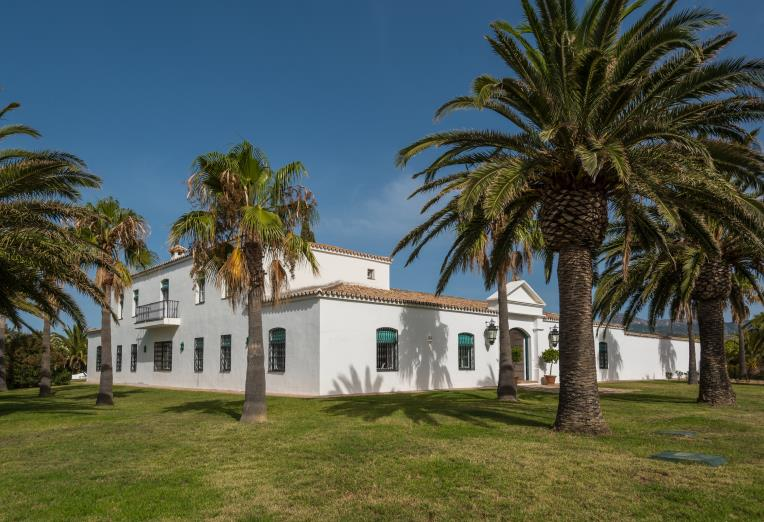
Dormitorios, salones, patios, jardines y zona de catering propia: todo lo necesario para que la celebración transcurra con total comodidad.
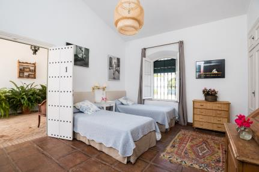
8 dormitorios y 9 cuartos de baño repartidos en dos plantas, con capacidad para 16 personas, ideales para que los novios y la familia más cercana se alojen en la propia finca.
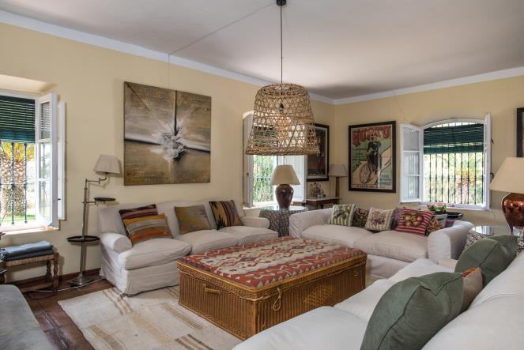
Dos amplios salones con chimenea, más de 100 m² en total, con acceso directo al patio principal, la piscina y el comedor.
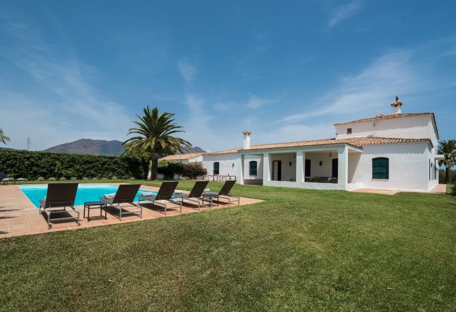
Piscina exterior rodeada de césped y palmeras, en más de 3.500 m² de jardines con vistas a la costa: el lugar perfecto para la ceremonia o el cóctel.
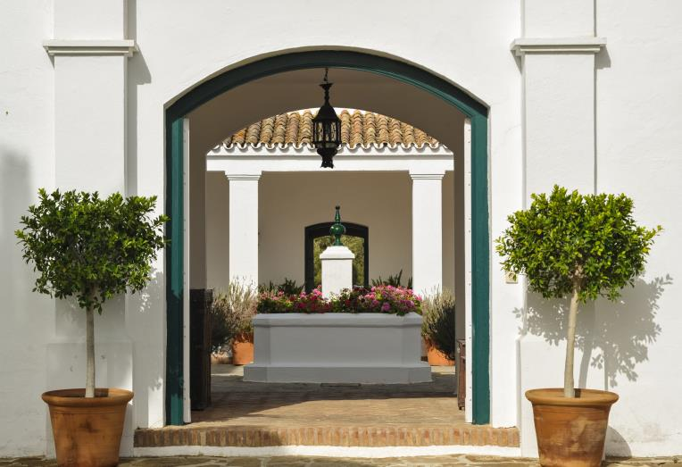
Dos patios interiores y dos porches cubiertos, con más de 250 m² de espacios porticados perfectos para comidas, brindis y momentos al aire libre.
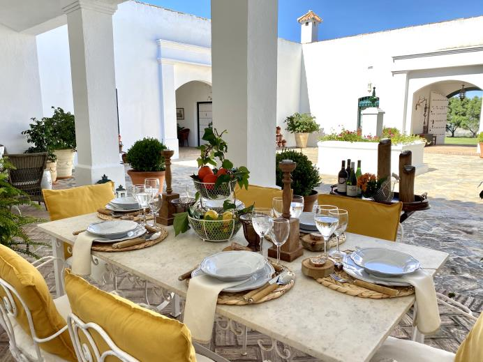
Cocina-office equipada, comedor propio y una zona de catering independiente de casi 300 m², con espacio de trabajo cubierto para el equipo de catering que elijas.
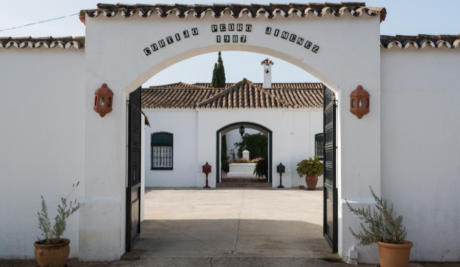
Amplia explanada de aparcamiento de 5.500 m² con acceso directo desde el camino asfaltado, y accesos diferenciados para vehículos y peatones.
Algunas imágenes de la finca, sus jardines y sus espacios, tal y como los vivirán tú y tus invitados.
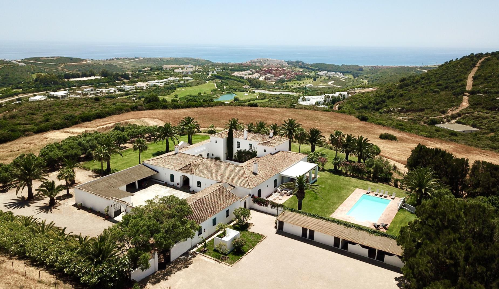
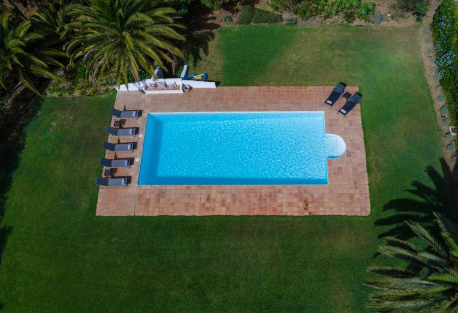
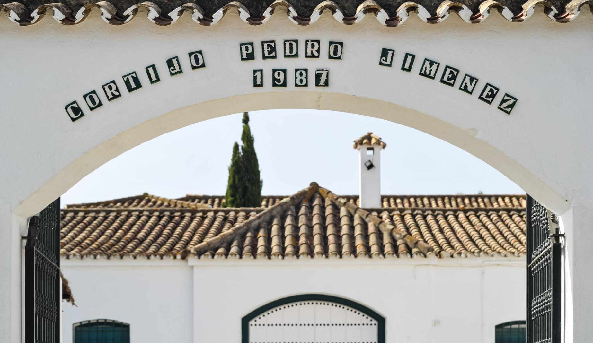
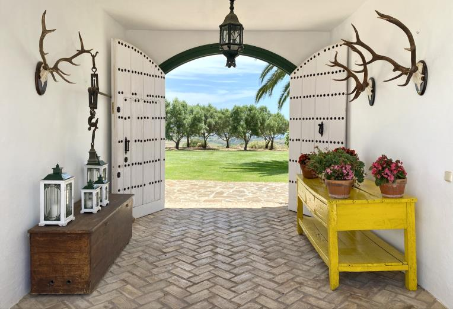
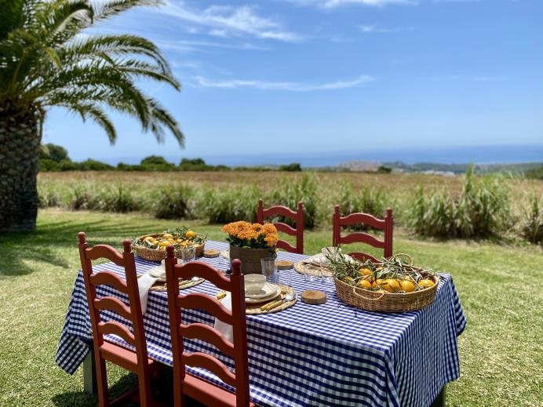
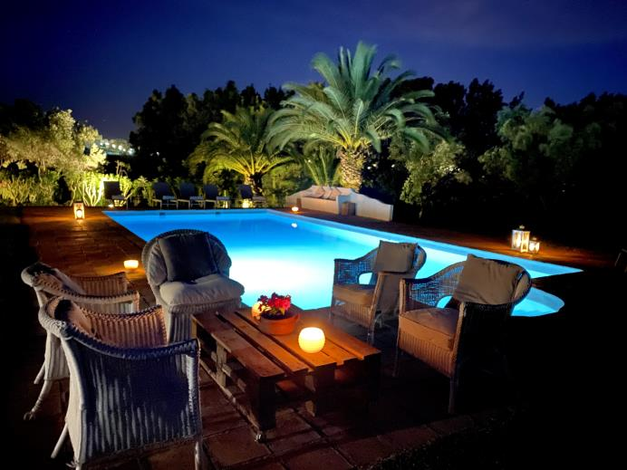
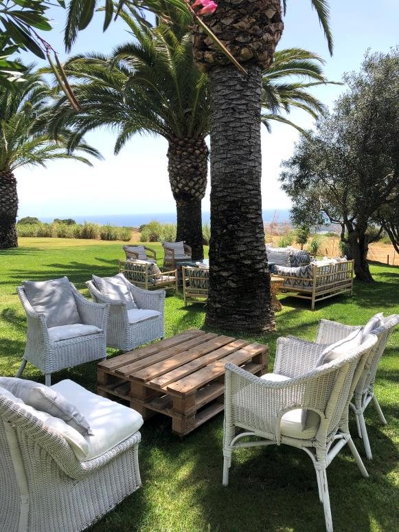
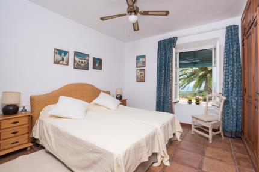
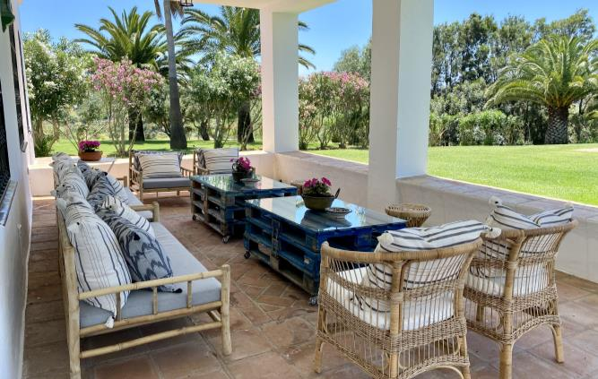
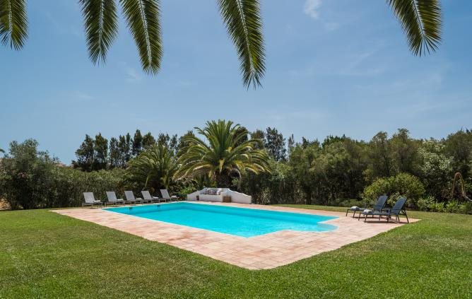
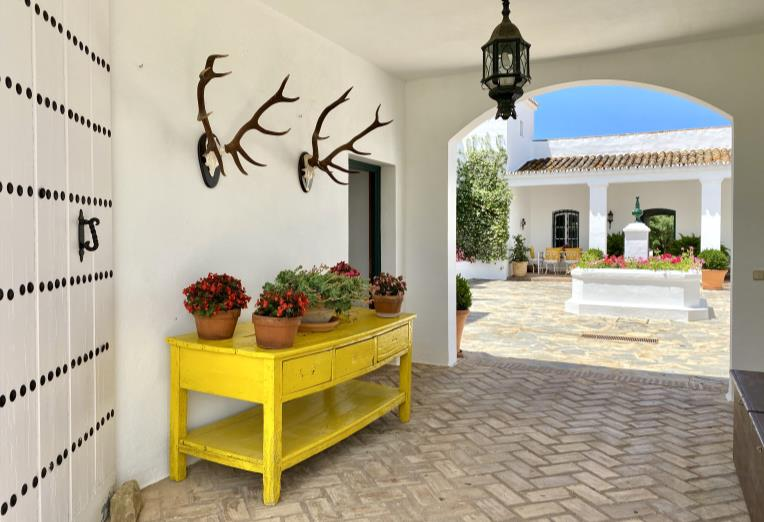
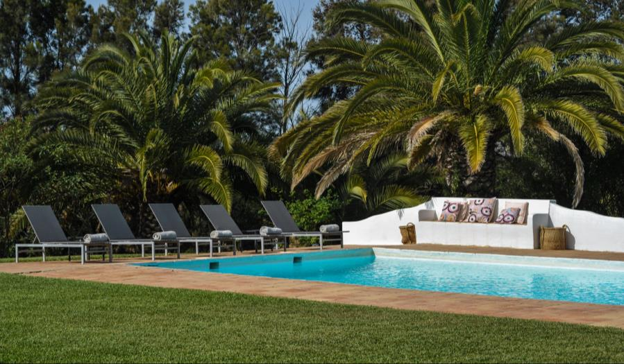
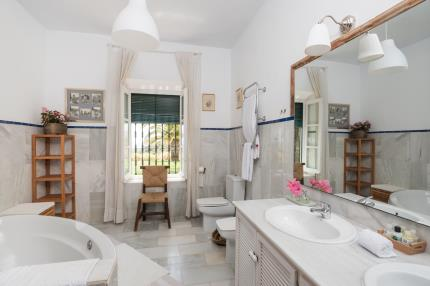
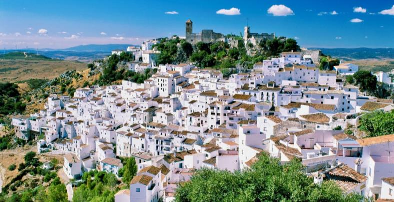
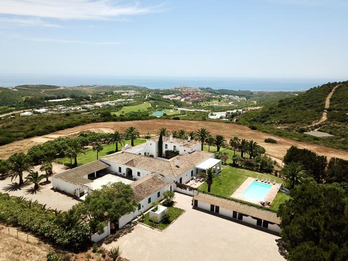
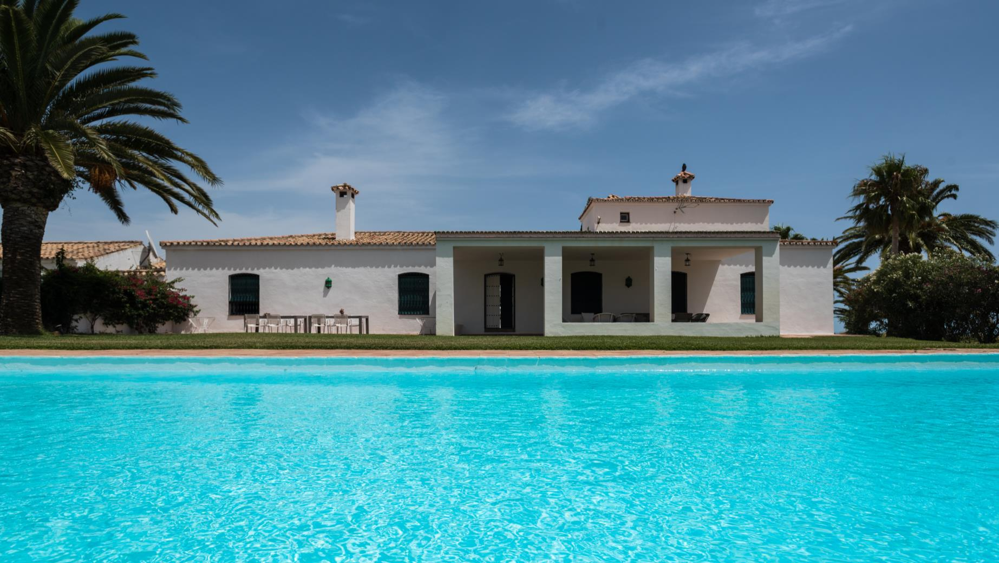
El Cortijo Pedro Jiménez se encuentra en el término municipal de Casares (Málaga), a 3,5 km de la CN-340 Málaga–Cádiz. La entrada a la finca es por camino asfaltado desde la carretera de Casares.
Cuéntanos la fecha, el número aproximado de invitados y cualquier detalle que quieras compartir. Te responderemos lo antes posible.
Síguenos y descubre más bodas y eventos en el Cortijo: